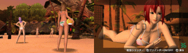

| フェーズ3 B4 1日目・2日目 | |||||||||||||||||||||||||||||||||||||||||||||||||||||||||||||||||||||||||||||||||||||||||||||||||||||||||||||||||||||||||||||||||||||||||||||||||||||||||||||||||||||||
| B4 1日目 | |||||||||||||||||||||||||||||||||||||||||||||||||||||||||||||||||||||||||||||||||||||||||||||||||||||||||||||||||||||||||||||||||||||||||||||||||||||||||||||||||||||||
| ・まずはB4ルートから外れずにアイテム回収すると良いでしょう。 ・流れはフェーズ3要点まとめでどうぞ。
・ブックマークしておき、文芸部 展示スペースに2回行きましょう。
|
|||||||||||||||||||||||||||||||||||||||||||||||||||||||||||||||||||||||||||||||||||||||||||||||||||||||||||||||||||||||||||||||||||||||||||||||||||||||||||||||||||||||
| B4 2日目 | |||||||||||||||||||||||||||||||||||||||||||||||||||||||||||||||||||||||||||||||||||||||||||||||||||||||||||||||||||||||||||||||||||||||||||||||||||||||||||||||||||||||
| ・B4ルート2日目は、他のルートに飛ぶことはありません。アイテムの全回収をしましょう。 ・この選択の前にブックマークをセットしておき、アイテムを回収しましょう。
・CG:キョンとハルヒの写真撮影。 ・アイテム「24 ハルヒとのツーショット写真」 |
|||||||||||||||||||||||||||||||||||||||||||||||||||||||||||||||||||||||||||||||||||||||||||||||||||||||||||||||||||||||||||||||||||||||||||||||||||||||||||||||||||||||
>>TOP PAGE |
|||||||||||||||||||||||||||||||||||||||||||||||||||||||||||||||||||||||||||||||||||||||||||||||||||||||||||||||||||||||||||||||||||||||||||||||||||||||||||||||||||||||
| DEAD OR ALIVE Paradise (デッド オア アライブ パラダイス) 南の島で“女の子”と常夏のバカンスを楽しもう！ 1シリーズ最多！「かわいい」「セクシー」総勢10人の“女の子”たち 「かすみ」「あやね」「ヒトミ」など「かわいい」そして「セクシー」な女の子たちが登場♪南の島の、多彩なスポットで“ビーチバレー”や“ぴょんぴょんゲーム”に挑戦しながら、女の子たちと仲良くなろう！  | |||